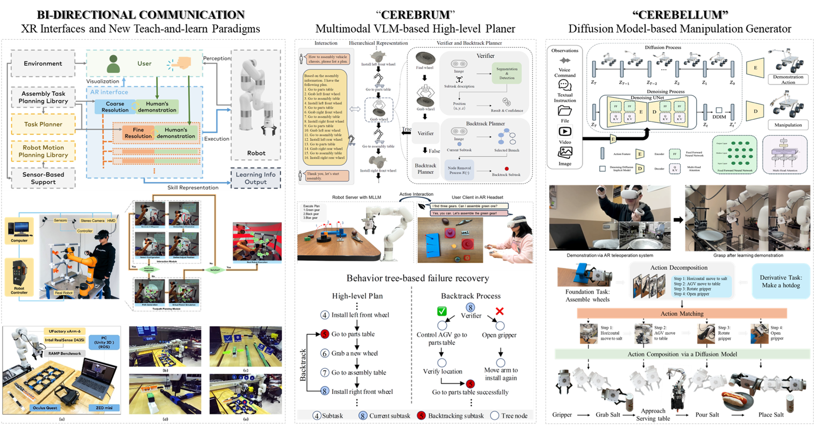

Research Directions
Research Interest

We create interfaces and robot learning algorithms that enable workflows to support humans collaborating with robots in a human-like paradigm. This research is motivated by the rapid advancement and widespread adoption of collaborative robots across manufacturing and other application domains, where robots are increasingly expected to automate repetitive or physically demanding tasks while working more closely with people. Despite this progress, the current level of collaboration between humans and robots remains far below what is needed for genuinely human-like collaboration. Existing methods are often unintuitive, time-consuming, and insufficiently intelligent. Robots still struggle to understand high-level human intent, respond appropriately to changing context, and make effective use of human expertise, cognitive abilities, and decision-making.
The central research question is: how can we enable seamless communication and better leverage human cognitive abilities in human-robot collaboration? To approach this question, we study human-human collaboration, which typically relies on communication and interaction, planning and reasoning, and action execution. Following this pattern, we envision a new paradigm for human-like collaboration built on bidirectional and intuitive interfaces for natural interaction, “cerebrum” models that support high-level task planning, and “cerebellum” models that enable the robot to carry out necessary manipulations. Throughout the process, human cognitive abilities are integrated through instructions, demonstrations, and supervision, while fundamental information such as object depth and environmental context supports accurate perception and reliable action generation.
To realize this vision, our work explores and develops innovative interfaces and robot learning algorithms for advancing human-like collaboration. Representative outcomes include XR-based collaboration interfaces and interaction techniques, a generic XR-empowered human-robot collaboration model with a prototyped robot-assisted assembly implementation, contrastive-learning methods for interpreting demonstrations in robot grasp generation, interactive robot learning with multimodal vision-language models, diffusion-based action decomposition and composition for manipulation generation, visualization error analysis and calibration for XR-based collaboration systems, and deep learning methods for depth image enhancement to strengthen robot perception.